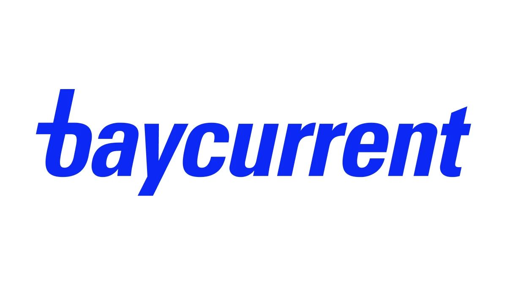
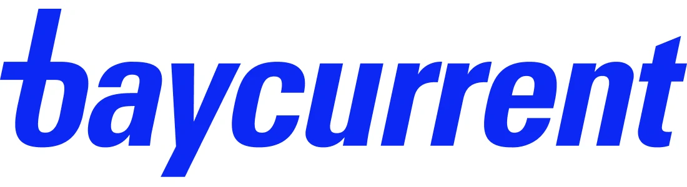

未経験からのコンサル転職›選考会情報
ベイカレントが中途採用強化中！1日で面接が完結する「休日1day選考会」も。

記事アイキャッチ画像16:9 推奨（1200×675）
2026年、国内独立系で最大規模の総合コンサルティングファームベイカレント・コンサルティングが、事業拡大にともなって採用を強化しています。
その一環として、土日や祝日に開催され、1日のうちに面接が完結する特別選考会が定期的に設けられています。
選考会には、コンサル業界No.1（※）転職エージェント「MyVisionコンサルティング」などから応募が可能です。
この記事では、その詳細についてご紹介します。
01「休日1day選考会」とは
通常の中途選考は、書類選考 → 一次面接 → 二次面接 → 最終面接 → オファー面談と、平日日中に複数回の企業訪問・オンライン面接が発生します。休日1day選考会は、一次面接から最終面接、内定通知までを休日1日に集約した特別枠です。
※ 選考の進み方は開催回・ご経歴により異なります。内定通知が後日となるケースもあります。

ベイカレントロゴカラー 11:3
対象企業株式会社ベイカレント
コンサルティング本部
※当日参加面接官によって、日程ごとに一部対象外となる職種がございます。
※枠には限りがあるため、前倒しで受付終了となることもございます
MyVisionコンサルティング限定日程での応募がおすすめ。
通常選考との違い
| 自己応募による中途選考 | 休日1day選考会 | |
|---|---|---|
| 日程 | 平日日中に複数回 | 休日1日で完結 |
| 一次面接から内定まで | 日程調整次第で1.5~3か月 | 面接は1日、最短当日に内定通知 |
| 在職中の負担 | 有給・中抜けが必要 | 就業日に影響しにくい |
| ケース面接対策 | 自力で準備 | 平日夜にオンラインで対人ケース面接練習（MyVisionなら複数回可） |
※ 選考フロー・当日の内容は開催回によって異なります。詳細はキャリア面談時にご案内します。
ベイカレントの選考に挑戦してみませんか？
エントリーは1分。1day選考がご希望でなければ、通常選考での伴走も可能です。
無料のキャリア面談を申し込むMyVisionコンサルティングの登録フォームへ移動します
02参加は簡単4ステップ
エントリーから内定後の年収交渉まで、MyVisionのキャリアアドバイザーが並走します。
-
1
初回キャリア面談オンライン30〜60分
ご経歴と志向をうかがい、1day選考会が合うかどうか、併願にお勧めの企業も含めてご提案します。参加を決めていない段階でも問題ありません。
-
2
書類送付徹底的に添削
履歴書・職務経歴書をご提出いただき、コンサル選考の観点で添削したうえでMyVisionからエントリーします。
-
3
面接練習平日夜にも、何度でも
ベイカレントの頻出質問・志望動機の伝え方・ケース面接の対人練習を、選考会前にオンラインで対策します。
-
4
選考会当日休日1日で完結
選考会当日に参加。1日のうちに選考が進むため、平日に何度も時間を空ける必要がありません。
03ベイカレント・コンサルティングという選択肢
日系独立系の総合コンサルティングファーム。戦略から実行まで、業界・テーマを横断して支援するのが特徴です。次の3点が主な魅力として挙げられます。
-
1
ワンプール制
業界・領域で組織を固定せず、一つのプールからプロジェクトにアサインされる体制。特定領域に閉じずキャリアの幅を広げやすい構造です。
-
2
戦略から実行まで一気通貫
構想だけで終わらず、実装・定着まで伴走する案件が多く、「絵を描いて終わり」になりにくい。さまざまな業界の経験が活きます。
-
3
未経験からの受け入れ実績多数
事業会社・SIer・金融・メーカー・WEB系など、コンサル未経験からの入社事例が豊富。ポテンシャル採用の枠が継続的にあります。
数字で見るベイカレント
- 売上高1,483億円
- 従業員数6,788名
- 平均年収1,331万円
※ 2026年2月期 有価証券報告書より
04なぜ今、ベイカレントが採用を強化しているのか
ベイカレントが採用を継続的に強化している背景には、大きく3つの潮流があります。
-
1
DX・AI領域の需要拡大
顧客の変革テーマが、単純な業務改善やファイナンスの改善から全社DX・データ／AI活用などへ広がり、上流から実行まで一気通貫で担える人材の需要が高まっています。
-
2
プロジェクト領域の多様化
幅広い業界の顧客・領域のプロジェクトが常に存在するようになり、コンサル未経験からでも現職の経験・知見を活かして入社できるケースが増えています。
-
3
コンサル業界自体の伸びによる採用競争の過熱
中小ファームの倒産数などが取りざたされることもあるコンサル業界ですが、大手の売上高は右肩上がりに伸び続けており、採用競争は過熱し続けています。そのため、平日忙しい優秀人材の獲得のための休日選考会開催がコンサル業界としてもトレンドとなっています。
05開催実績：2024年3月から継続開催
単発の企画ではありません。MyVision限定のベイカレント選考会は、2024年3月の初回から2026年8月まで、2年半にわたって継続的に開催されています。
（2024年3月〜）
（2026年8月時点）
・大阪
2026年の開催日（実績）
※ 2024年3月〜2025年12月にも継続して開催しています（上記は2026年分の抜粋）。
※ 開催の有無・日程・開催地は毎回異なります。最新の日程は、ご登録後にキャリアアドバイザーからご案内します。
06MyVisionコンサルティングについて
この休日1day選考会を受け付けているのは、コンサルティング業界に特化した転職エージェント「MyVisionコンサルティング」です。特化型ならではの3つの強みがあります。
-
1
コンサル業界に特化
総合型ではなくコンサル業界専門。ファームごとの評価基準・求める人物像の差分まで踏まえてご提案します。
-
2
ファームとの直接のリレーション
今回の休日1day選考会のように、MyVision限定の選考枠・日程をご案内できるのは、各ファームとの直接の関係があるためです。
-
3
選考対策の手厚さ
書類添削からケース面接対策まで、選考ごとに個別で対策します。初めてコンサルを受ける方の利用が多数を占めます。
※ ご登録・ご相談は無料です。
07よくあるご質問
コンサル未経験でも参加できますか？
まだ転職するか決めていません。参加しても大丈夫ですか？
今の会社に知られませんか？
次の開催日程はいつですか？
費用はかかりますか？
ベイカレント以外のファームも見られますか？
白抜き 11:3 ×

MyVisionロゴ白抜き 3:1
ENTRY休日1day選考会への応募を受け付けています
在職中でも、休日1日で選考が完結します。
まだ迷っている段階でのご相談も歓迎です。